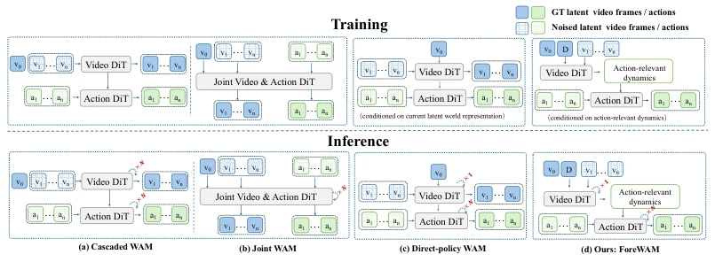
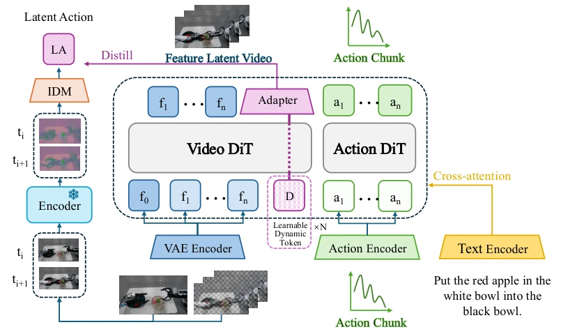

本文试图在“世界模型”与“直接策略”间寻找平衡。ForeWAM 的核心思路颇具巧思：不生成未来视频，却通过隐式状态让动作模型“预见”未来。利用 Future-KV 缓存机制，将视频 DiT 的中间态直接注入动作 DiT，既规避了迭代去噪的开销，又保留了动态上下文。标题“不看也能预见”虽显夸张，实则用隐式槽位替代了显式视频生成。优势在于推理快（比 Fast-WAM 快 14.8%）、参数少（2B vs 6B）；局限在于泛化性存疑，毕竟未真正观测未来，全靠隐式推断。对于实时性要求高的具身智能，这是实用的折中方案，但切勿将其视为通用视频生成模型的替代品。
This paper attempts to find a balance between "world models" and "direct policies". The core idea of ForeWAM is quite ingenious: instead of generating future videos, it allows the action model to "foresee" the future through implicit states. Utilizing the Future-KV caching mechanism, the intermediate states of the Video DiT are directly injected into the Action DiT, avoiding the cost of iterative denoising while retaining dynamic context. Although the title "Foreseeing without Looking" appears exaggerated, it actually uses implicit slots to replace explicit video generation. The advantages lie in fast inference (14.8% faster than Fast-WAM) and fewer parameters (2B vs 6B); the limitation lies in questionable generalization, after all, it does not truly observe the future, relying entirely on implicit inference. For embodied intelligence with high real-time requirements, this is a practical compromise, but do not regard it as a substitute for general-purpose video generation models.
研究动机Motivation
现有 World Action Models (WAMs) 面临效率与预测能力的矛盾。显式未来 WAMs（如 Cascaded 和 Joint 范式）通过生成未来观测来提供上下文，但迭代视频去噪导致推理成本高，且生成误差会传播到动作预测 (Du et al., 2023; Ye et al., 2026b)。直接策略 WAMs（如 Fast-WAM）虽跳过未来生成，提升了效率，却切断了 Action DiT 获取预测动态的显式路径 (Yuan et al., 2026b)。这导致策略难以捕捉交互诱导的场景演变。本文旨在解决这一接口问题：如何在无需解码未来视频的前提下，让 Action DiT 访问预测性动态上下文？这对提升具身智能的实时决策能力至关重要。
Existing World Action Models (WAMs) face a contradiction between efficiency and predictive capability. Explicit future WAMs (such as Cascaded and Joint paradigms) provide context by generating future observations, but iterative video denoising leads to high inference costs, and generation errors propagate to action prediction (Du et al., 2023; Ye et al., 2026b). Direct policy WAMs (such as Fast-WAM), while skipping future generation and improving efficiency, cut off the explicit path for Action DiT to obtain predictive dynamics (Yuan et al., 2026b). This makes it difficult for the policy to capture interaction-induced scene evolution. This paper aims to solve this interface problem: how to allow Action DiT to access predictive dynamic context without decoding future videos? This is crucial for improving the real-time decision-making capability of embodied intelligence.

Figure 1: World Action Model paradigms. (a) Cascaded WAMs first generate future observations and then condition action prediction on them. (b) Joint WAMs generate future observations and actions within a unified generative process. (c) Direct-policy WAMs skip future rollout at inference and condition action prediction on a latent world representation extracted from the current observa- tion. (d) Our ForeWAM retains direct action prediction while additionally exposing action-relevant predictive dynamics through hidden future-slot K/V states and dynamics registers. Hatched tokens denote noisy variables; future slots are stochastic internal states rather than observed future frames.
方法Method
ForeWAM 采用动力学条件化的直接策略架构，核心在于构建无需视频生成的预测接口。整体流程分为训练与推理两阶段。推理时，保留当前帧的干净视觉潜在表示，未来槽位初始化为噪声，通过单次 Video DiT Prefill 生成层级的 Key-Value 状态（Future-KV），直接缓存供 Action DiT 在去噪过程中读取，避免了迭代视频生成带来的延迟。同时引入动力学寄存器（Dynamics Registers），由冻结的 LaWM 潜在动作教师监督，强制其编码物体运动、接触变化等交互诱导的转换信息，而非通用视频特征。训练目标包含视频流匹配、动作流匹配及潜在动作蒸馏损失。该设计使得 Action DiT 能同时访问分布式的视觉上下文和紧凑的转换线索，而部署时完全不需要未来观测或教师网络，实现了“无视频生成”的预测性决策，兼顾了效率与动态感知能力。
ForeWAM adopts a dynamics-conditioned direct policy architecture, the core of which lies in building a predictive interface without video generation. The overall process is divided into two stages: training and inference. During inference, the clean visual latent representation of the current frame is retained, future slots are initialized with noise, and a single Video DiT Prefill generates hierarchical Key-Value states (Future-KV), which are directly cached for Action DiT to read during the denoising process, avoiding the latency brought by iterative video generation. Simultaneously, Dynamics Registers are introduced, supervised by a frozen LaWM latent action teacher, forcing them to encode interaction-induced transition information such as object motion and contact changes, rather than general video features. Training objectives include video flow matching, action flow matching, and latent action distillation loss. This design allows Action DiT to access distributed visual context and compact transition clues simultaneously, while deployment completely does not require future observations or teacher networks, achieving "video-generation-free" predictive decision-making, balancing efficiency and dynamic perception capability.

Figure 2: Dynamics-conditioned Action DiT. During training, demonstrated future frames supervise the video flow objective and a frozen latent-action encoder supplies the LaWM target. At inference, the future frames and teacher path are absent: the current latent is retained, future slots are initialized with noise, and one video prefill produces the per-layer K/V cache read during action denoising.
Experiments are conducted on the LIBERO standard suite and LIBERO-Plus robustness benchmark, comparing baselines such as Fast-WAM, OpenVLA, and π0. Metrics include task success rate and action generation latency. ForeWAM achieves 96.7% success rate on LIBERO, 61.6% on LIBERO-Plus, both superior to Fast-WAM (6B parameters vs 2B parameters). Inference latency drops from 667ms to 568ms, Flash version is only 220ms. Ablation studies show that the combination of Future-KV and latent action supervision yields the best results (61.6%), superior to single components. Results demonstrate that direct policy WAMs can retain predictive dynamic advantages without explicitly generating future observations, and significantly reduce computational overhead, but perform slightly worse than Fast-WAM under robot initial state perturbations, indicating that implicit prediction is still sensitive to specific perturbations.